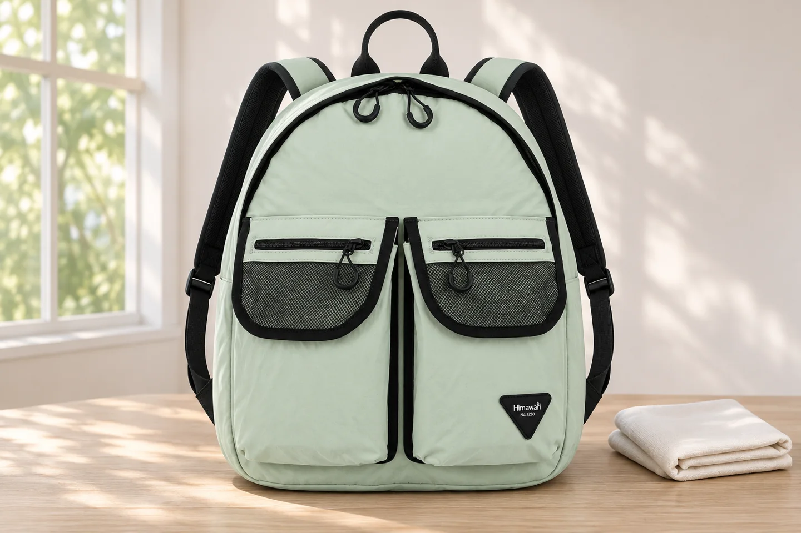
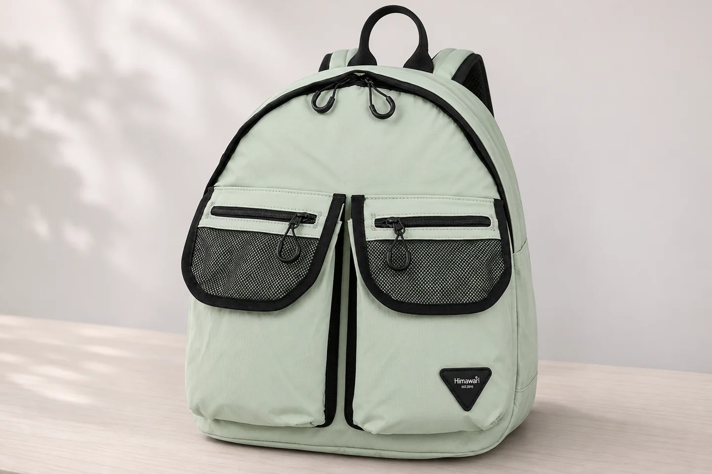
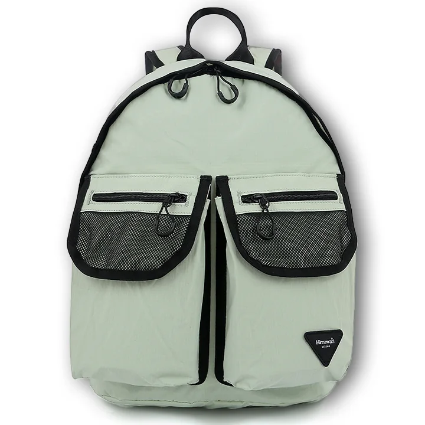

나란한 백팩 앞포켓, 두 쪽을 같은 두께로 채워야 할까

앞포켓이 좌우에 나란히 있으면 양쪽을 비슷하게 채워야 할 것 같습니다. 하지만 포켓을 나눈 이유가 반드시 같은 양의 물건을 넣으라는 뜻은 아닙니다. 자주 꺼내는 물건과 오래 두는 물건의 자리를 달리할 수도 있고, 한쪽은 비워 둔 채 이동할 수도 있습니다. 두 포켓이 가방 앞에서 어떻게 부풀고, 메거나 내려놓을 때 어떻게 움직이는지 살펴보면 됩니다.
No.1230 민트의 앞면에는 검은 망사와 가로 지퍼가 보이는 포켓 두 개가 나란히 있습니다. 두 포켓의 외형이 비슷하지만 정면 사진만으로 안쪽 공간이 서로 연결되어 있는지, 어떤 물건이 들어가는지는 확정할 수 없습니다. 아래 이야기는 사진에서 보이는 위치를 출발점으로 실제 가방과 자신의 소지품을 대조하는 방법입니다. 포켓의 깊이나 허용 무게를 실측한 결과는 아닙니다.
양쪽이 비슷해 보여도 먼저 여는 쪽은 다를 수 있다
집을 나서기 전에는 빈 포켓의 지퍼를 각각 살펴봅니다. 왼쪽과 오른쪽을 정하는 기준은 가방을 정면에서 바라볼 때로 통일하면 헷갈리지 않습니다. 손잡이가 움직이는 방향과 열리는 범위를 본 뒤, 가방을 평소처럼 어깨에 메고 다시 앞으로 가져와 봅니다. 정면 사진에서는 대칭이던 두 포켓도 손이 닿는 순서에서는 다르게 느껴질 수 있습니다.
한 손으로 가방을 받치고 다른 손으로 열어야 한다면, 어느 쪽을 먼저 여는지 알아두는 편이 좋습니다. 몸 앞에 가방을 가져왔을 때 손이 쉽게 닿는 쪽에 자주 확인할 물건을 두는 방법이 있습니다. 반대편을 반드시 덜 중요한 물건으로 채울 필요는 없습니다. 빈 채로 두어야 잠깐 옮길 자리가 생기는 사람도 있습니다.

부피는 개수와 따로 살핀다
두 포켓에 물건을 각각 한 개씩 넣더라도 모양이 같아지는 것은 아닙니다. 얇게 접힌 손수건과 작은 파우치는 개수는 같아도 닿는 면과 두께가 다릅니다. 포켓에 넣을 수 있는지는 겉보기 크기만으로 판단하지 말고 실제 입구와 물건을 맞춰 확인해야 합니다. 지퍼가 닫힌다는 이유만으로 안쪽에 남은 공간이 충분하다고 단정하지도 않습니다.
먼저 한쪽에만 넣어 가방을 세우고 앞판을 옆에서도 봅니다. 포켓이 앞으로 얼마나 나오는지, 지퍼 주변 천이 당겨 보이는지 확인한 다음 내용물을 꺼내 반대쪽에서도 같은 동작을 해봅니다. 두 포켓의 내부 치수를 모르더라도 평소 넣을 물건을 기준으로 가방이 어떻게 변하는지는 살필 수 있습니다. 모서리가 단단한 물건은 망사나 지퍼와 직접 닿는 자리를 따로 확인합니다.
두 쪽을 모두 채운 뒤에는 앞모습만 보지 않습니다. 가방을 멨을 때 앞쪽 무게가 어디에 모이는지, 내려놓을 때 포켓이 바닥이나 책상 가장자리에 먼저 닿는지 살펴봅니다. 무게 차이가 조금 보인다고 곧바로 문제라고 할 수는 없습니다. 다만 걸을 때 한쪽 내용물이 계속 움직이거나 지퍼를 열 때 포켓을 잡아당겨야 한다면 물건의 위치와 부피를 바꿔 볼 만합니다.
자주 여는 자리와 보관하는 자리를 다르게
자주 꺼내는 쪽에는 꺼낸 뒤 제자리로 돌려놓기 쉬운 물건을 둡니다. 예를 들어 손수건을 사용한다면 접힌 모양을 매번 똑같이 만들기보다 포켓 입구에 걸리지 않는지부터 확인합니다. 이동 중 손에 쥔 물건을 잠깐 넣는 자리라면 지퍼를 닫기 전 다른 물건이 입구 쪽으로 밀려 나오지 않았는지도 봅니다.
반대쪽에는 목적지에 도착해 한 번 꺼낼 물건을 둘 수 있습니다. 두 공간에 같은 종류를 나누어 넣으면 찾기 편한 사람도 있지만, 어느 쪽에 무엇을 넣었는지 자주 잊는다면 한쪽을 비워 두는 선택이 더 단순할 수 있습니다. 규칙을 정할 때는 포켓의 모양보다 자신의 꺼내는 횟수와 가방을 돌리는 동작을 먼저 생각합니다.
가방을 정리한 다음에는 앞쪽으로 나온 두 포켓이 서로 닿거나 겹쳐 보이는지도 살펴봅니다. 사진에서 보는 선은 포켓의 겉면을 구분하는 단서이지, 안쪽 공간을 알려 주는 도면이 아닙니다. 가방에 내용물을 넣고 바닥을 받쳐 놓은 상태에서 두 지퍼를 각각 움직여 보면, 포켓을 열 때 다른 쪽의 모양까지 달라지는지 자신의 조합에서 확인할 수 있습니다.
소지품을 바꾼 날에는 같은 규칙이 계속 맞는지도 점검합니다. 외투 주머니에 들어가던 물건이 백팩으로 옮겨오면 포켓 하나가 갑자기 두꺼워질 수 있습니다. 이때 양쪽의 겉모양을 억지로 맞추기보다, 자주 꺼내는 물건이 다른 물건에 눌려 있지는 않은지와 지퍼가 자연스럽게 닫히는지 살펴보면 됩니다.

닫은 뒤에도 확인할 것
포켓을 채운 뒤에는 두 지퍼를 각각 끝까지 움직여 보고 주변 천이 맞물린 곳에 끼지 않았는지 확인합니다. 지퍼가 평소보다 뻑뻑하면 힘으로 당기지 말고 물건을 조금 덜어 원단의 당김부터 풀어 봅니다. 여닫는 동안 저항이 계속되거나 부품이 손상된 것처럼 보이면 사용을 멈추고 제품 상태를 문의하는 편이 안전합니다.
망사에 보이는 것은 내용물의 일부일 뿐입니다. 한쪽의 색이 더 진하게 보여도 실제로 더 많이 들어 있다고 판단할 수 없고, 바깥에서 보이지 않는 부분의 여유도 알기 어렵습니다. 작은 글씨나 개인정보가 밖에서 보이는지 걱정된다면 실제 물건을 넣고 밝은 곳에서 확인한 뒤 다른 자리를 정합니다.
결국 두 앞포켓을 맞추는 기준은 양이 아니라 사용입니다. 가방을 메고 앞으로 돌리는 동작, 한쪽씩 열고 닫는 손, 채운 뒤 포켓이 앞으로 나오는 모양을 함께 보면 됩니다. 양쪽이 비슷하게 보이는지보다 필요한 물건을 무리 없이 꺼내고 지퍼를 편하게 닫을 수 있는지가 더 좋은 판단 기준입니다.